เคยไหมไปเที่ยวทีต้องไรปวดหัวทุกที ไม่ว่าจะเป็นการหาสถานที่ท่องเที่ยวที่ถูกใจ อาหารที่ถูกปาก หรือที่พักที่ต้องไกลกับสถานที่เหล่านี้อีก เราเชื่อว่าหลายคนก็คงจะเบื่อกับเหตุการณ์เหล่านี้ที่ต้องค่อยมาวางแพลนเอง และอยากจะมองหาตัวช่วยที่สามารถวางแพลนการเที่ยวของเราได้ใช่ไหมล่ะ บอกเลยว่าวันนี้ " TRAVEL WITH US " จะมาแนะนำแพลนการท่องเที่ยวที่จะช่วยให้ประหยัดเวลาการเดินทางไปสถานที่ต่าง ๆ แล้วยังช่วยให้เรามีเวลาในการเตรียมตัวเพิ่มอีกด้วย ซึ่งแพลนที่จัดให้นั้นจะเลิศและปังขนาดไหน ไปดูพร้อม ๆ กันเลย
ทริปเที่ยว 5 วัน 4 คืน ในกรุงเทพฯ
Day 1
ท่องเที่ยวชมความงามไปกับวัดอารามในยามเช้า แวะทานอาหารแบบไทยๆที่บ้านนวล ชมเสาชิงช้ายามคำคืน และที่พักสุดหรูใจกลางกรุงเทพ
-
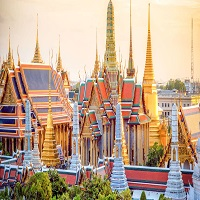
วัดพระเชตุพนวิมลมังคลารามราชวรมหาวิหาร (วัดโพธิ์)
วัดพระเชตุพนวิมลมังคลารามราชวรมหาวิหารหรือวัดโพธิ์ ยังเป็นวัดประจำรัชกาลในรัชกาลที่ 1 อีกทั้งเปรียบเสมือนมหาวิทยาลัยแห่งแรกของประเทศไทยอีกด้วย นอกจากนี้ในวันที่ 16 มิถุนายน 2554 ยูเนสโกได้ขึ้นทะเบียนจารึกวัดโพธิ์จำนวน 1,440 ชิ้น เป็นมรดกความทรงจำโลกในทะเบียนนานาชาติ
-
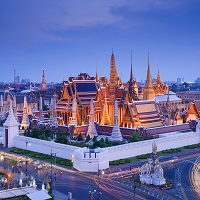
วัดพระศรีรัตนศาสดาราม (วัดพระแก้ว)
วัดพระศรีรัตนศาสดารามหรือวัดพระแก้ว สร้างขึ้นตามแบบวัดพระศรีสรรเพชญสมัยอยุธยาเมื่อ พ.ศ.2325 โดยวัดนี้อยู่ในเขตพระราชฐานชั้นนอกทางทิศตะวันออก เป็นที่ประดิษฐานพระพุทธมหามณีรัตนปฏิมากรหรือพระแก้วมรกตปางสมาธิ ภายในพระอุโบสถของวัดและระเบียงรอบวัดมีภาพจิตรกรรมฝาผนังสวยงามมากเรื่องรามเกียรติ์
-
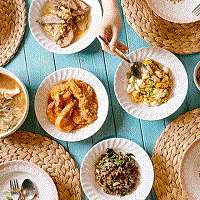
บ้านนวล
บ้านนวล ร้านอาหารไทยพื้นบ้านเล็ก ๆ ในซอยสามเสนซอย 2 ที่ให้กลิ่นอายของบ้านเก่าสมัยก่อน พร้อมเสิร์ฟอาหารเมนูง่าย ๆ แต่จัดเต็มไปด้วยวัตถุดิบที่คัดเลือกมาอย่างพิถีพิถันด้วยมือของสองพี่น้องที่รักในการทำอาหารมาตั้งแต่เด็ก ๆ
-
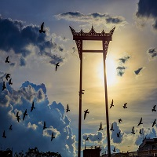
เสาชิงช้า
เป็นสถาปัตยกรรมที่สร้างขึ้นเพื่อใช้ประกอบพิธีโล้ชิงช้า ใน พระราชพิธีตรียัมพวาย ตรีปวาย ของ ศาสนาพราหมณ์-ฮินดู โดยทั่วไปหมายถึงเสาชิงช้าที่ตั้งอยู่หน้า วัดสุทัศน์เทพวราราม และลานหน้า ศาลาว่าการกรุงเทพมหานคร (ลานคนเมือง) ใกล้กับ เทวสถานโบสถ์พราหมณ์ ถือเป็นสัญลักษณ์อย่างหนึ่งของ กรุงเทพมหานคร
-
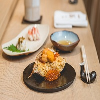
Ginza Sushi Ichi
บินมาไกลจากญี่ปุ่นกับมิชลินสตาร์ 1 ดาว ร้านในกรุงเทพฯ นี้ตั้งอยู่ในตึกเอราวัณที่ไม่พลุกพล่าน แต่เมื่อเข้าไปในร้านจะพบกับกองทัพเชฟชาวญี่ปุ่นที่ทุกคนล้วนผ่านการเทรนด์มาจากญี่ปุ่นเเละถ้าใครโชคดีไปกว่านั้น อาจจะได้ทานดินเนอร์สุดพิเศษโดยเชฟใหญ่ Masakazu Ishibashi มาสเตอร์ซูชิผู้ที่มีประสบการณ์การทำซูชิมายาวนาน
-
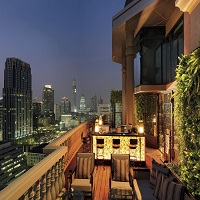
Hotel Muse
เป็นโรงแรมที่ตั้งอยู่ในย่านใจกลางเมืองที่ทันสมัย บอกเล่าเรื่องราวที่เป็นเอกลักษณ์และบรรยากาศของยุคทองแห่งการเดินทางในช่วง ค.ศ. 1920 ได้เป็นอย่างดี สะท้อนให้เห็นยุคทองของเอเชีย เราขอต้อนรับแขกทุกท่านเพื่อเปิดประสบการณ์เหนือระดับ และสร้างเรื่องราวที่แตกต่างจากโรงแรมอื่นในกรุงเทพมหานคร
-
End
Of
Day
Day 2
ชมมรดกความงามไปกับวัดและพิพิธภัณฑ แวะทานอาหารร้านดัง ต่อด้วยเดินเที่ยวท่ามหาราช ชมความงามของวัดยามเย็น และที่พักสุดหรูใจกลางกรุงเทพ
-
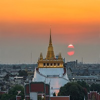
วัดสระเกศราชวรมหาวิหาร (วัดภูเขาทอง)
วัดสระเกศ เป็นวัดโบราณในสมัยกรุงศรีอยุธยา เดิมชื่อวัดสะแก พระบาทสมเด็จพระพุทธยอดฟ้าจุฬาโลกมหาราชโปรดเกล้าฯ ให้ปฏิสังขรณ์และขุดคลองรอบพระอาราม แล้วพระราชทานนามใหม่ว่า วัดสระเกศ ซึ่งแปลว่า ชำระพระเกศา
-
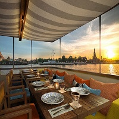
Supanniga Eating Room
เป็นการผสมผสานอย่างลงตัวของความหลงใหลในรสชาติอาหารที่แตกต่าง และความตั้งใจที่จะสืบสานตำรับอาหารไทยพื้นบ้านสูตรโบราณ ที่ถ่ายทอดจากรุ่นสู่รุ่น จุดเริ่มต้นจากการหวนระลึกถึงอาหารสูตรฝีมือคุณยายของธนฤกษ์ กลายเป็นแนวคิดของ การฟื้นฟูตำรับอาหาร ที่เป็นมรดกตกทอดในครอบครัว
-
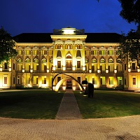
Museum Siam
เป็นพิพิธภัณฑ์การเรียนรู้แห่งแรกที่เน้น การสร้างประสบการณ์สดใหม่ในการชมพิพิธภัณฑ์ ซึ่งจัดตั้งขึ้นเพื่อเป็นต้นแบบของ แหล่งเรียนรู้ที่น่ารื่นรมย์ และช่วยยกระดับมาตรฐานการจัดการเรียนรู้ในรูปแบบใหม่ ให้กับประชาชน โดยเฉพาะเด็กและเยาวชนไทยเกี่ยวกับการสร้างสำนึกในการรู้จัก ตนเอง รู้จักเพื่อนบ้าน และรู้จักโลก
-
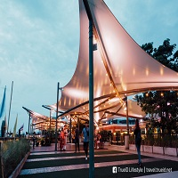
ท่ามหาราช
จุดนัดพบแห่งใหม่ของไลฟ์สไตล์บนถนนมหาราช ตั้งอยู่บนเกาะรัตนโกสินทร์ ริมแม่นํ้าเจ้าพระยา ซึ่งถือเป็นจุดกำเนิดของกรุงเทพมหานคร เป็นศูนย์กลางการท่องเที่ยว อุดมไปด้วยศิลปะ และมรดกทางวัฒนธรรมของชุมชน แหล่งรวมวัตถุบูชาที่เก่าแก่และใหญ่ที่สุดแห่งหนึ่งในเมืองไทย รวมถึงร้านอาหารอร่อยที่มีประวัติอันยาวนานมากมาย
-
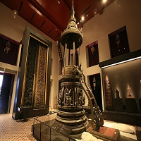
พิพิธภัณฑสถานแห่งชาติ พระนคร
ภายในพิพิธภัณฑ์มีการจัดแสดงเกี่ยวกับประวัติศาสตร์ชาติไทย ประวัติศาสตร์ศิลปะและโบราณคดีในประเทศไทย งานประณีตศิลป์และชาติพันธุ์วิทยา รวมไปถึงนิทรรศการชั่วคราวต่าง ๆ พิพิธภัณฑสถานแห่งชาติ พระนคร เป็นพิพิธภัณฑ์ที่มีสถิติจำนวนผู้เข้าชมมากที่สุดในประเทศไทย
-
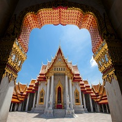
วัดเบญจมบพิตร
เป็นพระอารามหลวงชั้นเอก ชนิดราชวรวิหาร วัดเบญจบพิตร หมายถึง วัดของเจ้านาย ๕ พระองค์ที่ทรงร่วมกันปฏิสังขรณ์วัดแห่งนี้ เมื่อพระบาทสมเด็จพระจุลจอมเกล้าเจ้าอยู่หัวทรงสร้างสวนดุสิตขึ้นพระองค์ทรงทำผาติกรรมสถาปนาวัดขึ้นใหม่และพระราชทานามว่า วัดเบญจมบพิตรดุสิตวนาราม อันหมายถึง วัดของพระเจ้าแผ่นดินรัชกาลที่ ๕
-
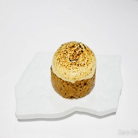
Gaggan
เป็นร้านอาหารอินเดียยุคใหม่ (progressive Indian cuisine) ที่ไม่ใช่แค่เมนูอาหารสุดพิเศษ แต่เป็นการนำเสนอประสบการณ์ในการลิ้มรสอาหารที่พัฒนาและปรุงแต่งแบบโมเลกูลาร์ (molecular gastronomy) ซึ่งเป็นการนำหลักการทางวิทยาศาสตร์มาประยุกต์ใช้ในการประกอบอาหารเพื่อสร้างอาหารรูปแบบแปลกใหม่ที่ทั้งสวยและรสชาติเยี่ยม
-
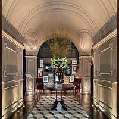
Hotel Muse
เป็นโรงแรมที่ตั้งอยู่ในย่านใจกลางเมืองที่ทันสมัย บอกเล่าเรื่องราวที่เป็นเอกลักษณ์และบรรยากาศของยุคทองแห่งการเดินทางในช่วง ค.ศ. 1920 ได้เป็นอย่างดี สะท้อนให้เห็นยุคทองของเอเชีย เราขอต้อนรับแขกทุกท่านเพื่อเปิดประสบการณ์เหนือระดับ และสร้างเรื่องราวที่แตกต่างจากโรงแรมอื่นในกรุงเทพมหานคร
-
END
OF
DAY
Day 3
ชมมรดกความงามไปกับวัดอรุณ แวะทานอาหารร้านดัง ต่อด้วยเดินเที่ยว iconsiam และที่พักสุดหรูที่ Centara Grand at Central World Hotel
-
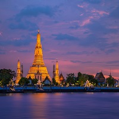
วัดอรุณราชวรารามราชวรมหาวิหาร
ในรัชสมัยพระบาทสมเด็จพระจอมเกล้าเจ้าอยู่หัวโปรดเกล้าฯ ให้บูรณปฏิสังขรณ์วัดอรุณราชธารามหลายรายการ และให้อัญเชิญพระบรมอัฐิของพระบาทสมเด็จพระพุทธเลิศหล้านภาลัยมาบรรจุไว้ที่พระพุทธอาสน์ของพระประธานในพระอุโบสถด้วย เมื่อการปฏิสังขรณ์เสร็จสิ้นลง พระราชทานนามวัดใหม่ว่า “วัดอรุณราชวราราม”
-
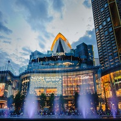
Iconsiam
โครงการประกอบด้วยอาคารศูนย์การค้าขนาดใหญ่ริมแม่น้ำเจ้าพระยาจำนวนสองอาคารเชื่อมต่อกัน ซึ่งมีพื้นที่ขายรวมกันมากเป็นอันดับที่ 2 ของประเทศ อาคารชุดเพื่อการพักอาศัย 2 อาคาร ซึ่งหนึ่งในนั้นเป็นอาคารที่สูงที่สุดในประเทศไทย และอาคารศูนย์การค้าขนาดกลางที่เชื่อมต่อกับอาคารโรงแรม
-
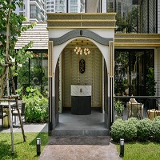
Sorn
จากแรงบันดาลใจในการค้นพบวัตถุดิบท้องถิ่นภาคใต้ที่เริ่มสูญหาย ถูกนำมาครีเอทใหม่สู่เมนูจานหลักอีกครั้ง ด้วยการตามหาวัตถุดิบชั้นเลิศที่เริ่มต้นจากการลงพื้นที่ภาคใต้หลายจังหวัด พร้อมนำภูมิปัญญาท้องถิ่นมาประยุกต์ใช้ร่วมกับเทคนิคปรุงอาหารที่ทันสมัย ให้กลายเป็นเมนูสุดพิเศษที่เสิร์ฟในสไตล์ของ Fine Southern Cuisine
-
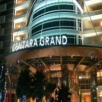
Centara Grand at Central World Hotel
อยู่ใจกลางแหล่งช้อปปิ้งและย่านธุรกิจของกรุงเทพฯ โรงแรมสูง 55 ชั้นมีทัศนียภาพอันงดงามของเมืองที่เห็นได้จากห้องพักและห้องอาหารของโรงแรม พร้อมกับสิ่งอำนวยความสะดวกทีผสมผสานการใช้ชีวิตในเมืองในสไตล์รีสอร์ทได้อย่างน่าประทับใจ สปาเซ็นวารีที่ได้รับรางวัลชนะเลิศ พร้อมด้วยห้องออกกำลังกาย สนามเทนนิสและสระว่ายน้ำกลางแจ้ง
-
End
Of
Day
Day 4
ชมผลงานศิลป์ต่างๆที่หอศิลป์ ตามด้วยชมบ้านเรือนไทยที่ JimThompson Thai House จากนั้นแวะทานอาหารร้าน Suhring ต่อด้วยเดินชมวิวสวยๆที่ Mahanakhon Skywalk และที่พักสุดหรูที่ Centara Grand at Central World Hotel
-
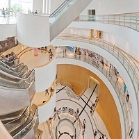
Bangkok Art and Culture Centre
หอศิลป์เป็นอาคารได้รับการออกแบบให้เป็นทรงกระบอก สูง 9 ชั้น โดยแบ่งเป็นห้องแสดงผลงาน โรงภาพยนตร์ ห้องสมุด ห้องเก็บรักษาผลงาน ห้องประชุม ร้านค้า และร้านอาหารในชั้นที่ 6 เป็นต้นไป มีทางเดินลาดเอียงเลาะขึ้นไปตามชั้นต่างๆ ในรูปทรงกระบอกของอาคาร และมีการนำแสงธรรมชาติในการจัดแสดงงาน
-
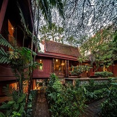
JimThompson Thai House
เป็นพิพิธภัณฑ์ที่จัดแสดงศิลปวัตถุของเอเชียตะวันออกเฉียงใต้ โดยเฉพาะพระพุทธรูปยุคสมัยต่างๆ ไว้เป็นจำนวนมาก ตัวอาคารเรือนไทยได้รับรางวัลอาคารอนุรักษ์ดีเด่น ประจำปี พ.ศ. 2539 จากสมาคมสถาปนิกสยาม ในพระบรมราชูปถัมภ์
-
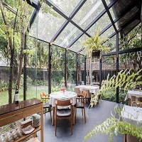
Suhring
ร้านอาหาร Fine Dining จากสองเชฟฝาแฝดชาวเยอรมันที่เคยฝากฝีมือไว้กับร้านดังหลายร้าน ตอนนี้ทั้งสองเชฟพร้อมจะมาสร้างสีสันในวงการอาหารให้กับกรุงเทพ ฯ ด้วยอาหารแนว Fine Dining สไตล์เยอรมันแล้ว
-
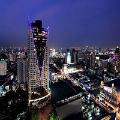
Mahanakhon Skywalk
ตั้งอยู่บนชั้น 74, 75 และ 78 ของตึกมหานคร โดยมีไฮไลท์อยู่ที่จุดชมวิวชั้นดาดฟ้าแบบ 360 องศา ทั้งภายในและภายนอกอาคาร ตื่นตาตื่นใจไปกับหนึ่งในพื้นกระจกลอยฟ้าขนาดใหญ่ที่สุดในโลก และ Rooftop Bar ที่สูงที่สุดในประเทศไทย พร้อมโดยสารลิฟท์ความเร็วสูงที่สามารถพาขึ้นไปชั้น 74 โดยใช้เวลาแค่ 50 วินาทีเท่านั้น
-
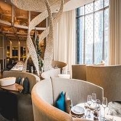
Paste
สำหรับชาวต่างชาติหรือแม้แต่คนไทยด้วยกันเอง การที่จะหาร้านอาหารไทยรสชาติต้นตำรับจริง ๆ เป็นเรื่องค่อนข้างยาก สำหรับ Paste ร้านอาหารไทยสไตล์ Innovative แห่งนี้ ยังคงยึดคอนเซ็ปต์การปรุงอาหารแบบไทยดั้งเดิม และนำเสนอในรูปแบบที่ทันสมัย
-
Centara Grand at Central World Hotel
อยู่ใจกลางแหล่งช้อปปิ้งและย่านธุรกิจของกรุงเทพฯ โรงแรมสูง 55 ชั้นมีทัศนียภาพอันงดงามของเมืองที่เห็นได้จากห้องพักและห้องอาหารของโรงแรม พร้อมกับสิ่งอำนวยความสะดวกทีผสมผสานการใช้ชีวิตในเมืองในสไตล์รีสอร์ทได้อย่างน่าประทับใจ สปาเซ็นวารีที่ได้รับรางวัลชนะเลิศ พร้อมด้วยห้องออกกำลังกาย สนามเทนนิสและสระว่ายน้ำกลางแจ้ง
-
End
Of
Day
Day 5
จะเลือก shopping แบบคนเมืองที่ Siamparagon หรือจะ shopping สาย chill ที่ Chatuchak Weekend Market หรือจะไปทั้ง 2 ที่เลยก็ไปได้ง่ายๆเพราะระยะทางไม่ห่างกันมากเลย
-
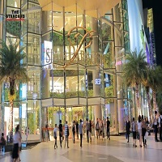
Siamparagon
โอบล้อมส่วนของห้างสรรพสินค้าทางทิศเหนือ ตะวันตก และใต้ ในลักษณะคล้ายรูปตัวแอล ภายในพื้นที่ศูนย์การค้า ประกอบด้วยร้านสินค้าลักชูรี ร้านค้าแฟชัน ร้านสินค้าเทคโนโลยี โชว์รูมรถยนต์ ร้านสินค้าเฟอร์นิเจอร์และของตกแต่งบ้าน ร้านอาหาร
-
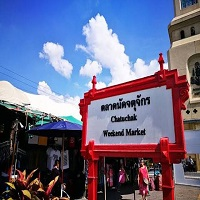
ตลาดนัดจตุจักร
เป็นตลาดนัดในกรุงเทพมหานคร มีจำนวนแผงค้าทั้งหมดมากกว่า 8,000 แผงค้า แบ่งเป็น 27 โครงการ มีสินค้า 8 ประเภท ได้แก่ ผักและผลไม้ เสื้อผ้า สัตว์เลี้ยง ต้นไม้ อาหารปรุง อาหารสำเร็จรูป อาหารสด และเบ็ดเตล็ด เป็นสถานที่ท่องเที่ยวที่นิยมทั้งไทยและต่างชาติ
-
End
Of
Day